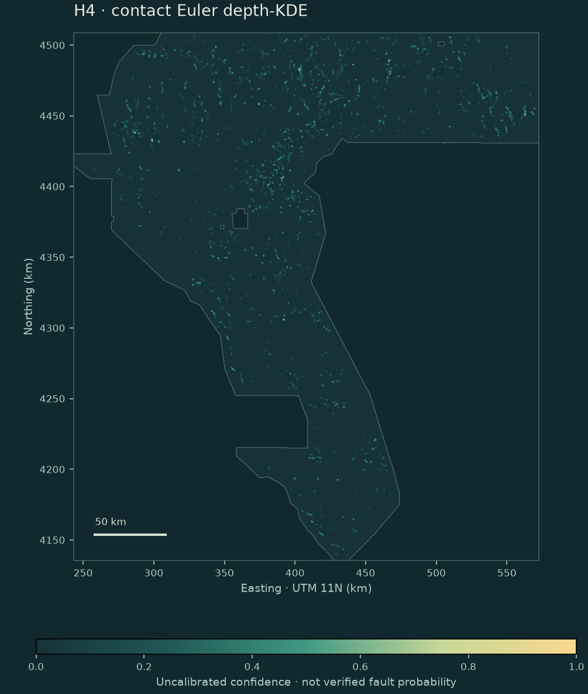
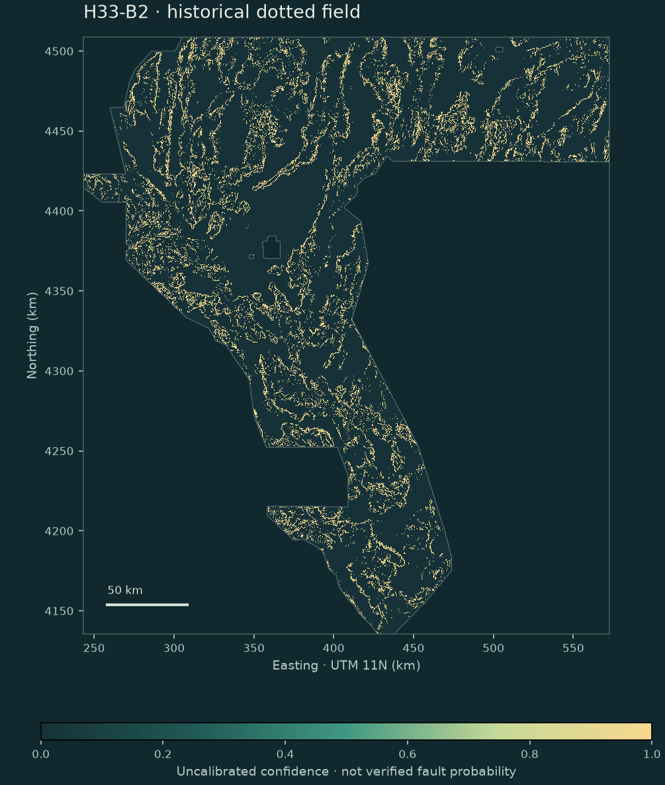

AUDIT / NO SELECTIVE REPORTING
Evidence you can inspect.
Hashes prove artifact identity. Analytic tests check the inversion. A proxy test measures a limited outcome. None of these alone establishes a new fault or a leaderboard win.
| Same blocked SGMC proxy | DTI | Interpretation |
|---|---|---|
| H4 · new depth-KDE | 0.006902 | 0/16 truth-bearing block wins against either comparator below. |
| H33-B2 · owner’s reference | 0.091550 | Diagnostic only; not the owner-reported 0.2778 leaderboard score. |
| Frozen all-prior incumbent | 0.835907 | SGMC-derived: circular on this proxy. |
| H2-B · previous research | 0.006313 | Also failed promotion; not a meaningful quality target. |
H4 loses to H33-B2 in every truth-bearing block. Separately, the inherited 18-of-24 rule is impossible because eight blocks have no truth. The SGMC-derived incumbent is circular on the SGMC proxy. We preserve these negative findings and do not relabel them as an independent validation success.
Exact template contract.
One float32 band. EPSG:32611, 100 m, 3,730 × 3,292. Exact affine transform and footprint. Finite [0,1] inside; NaN only outside.
Re-read receipt ↗Raw values, not previews.
343 byte-verified artifacts; 339 exact-grid and 340 full-size array comparisons. A spatial format fixture, a one-pixel demo and a header-only non-raster are explicitly distinguished from prediction maps.
Full comparison table ↗No weekly slot.
0 block wins against both H33-B2 and the frozen incumbent. This is a new scientific implementation, not a proven improvement. No organizer score exists.
Every block and comparator ↗NOVELTY / LOCKED BEFORE SCORING
Not a re-packaged previous submission.
Reject identical file or canonical pixel hashes, |Pearson| ≥0.85, top-37,654 positive-cell Jaccard ≥0.50, or containment ≥0.80. All pixels are compared—not a random sample. Three legacy nodata=0 tags are treated as raw stored zero predictions, not used to hide absence pixels.
| Closest prior outputs by |r| | Pearson r | Top-budget Jaccard |
|---|---|---|
| GEMSDOE40 gemsdoe40-h2b-tmi-euler-natural-support-20261005.tif | 0.128319 | 0.045539 |
| GEMSDOE40 gemsdoe40-h7-rtp-euler-gravity-context-3d-kde-20261006-998f660f.tif | 0.079168 | 0.049527 |
| GEMSDOE9 GEMSDOE9-basin-v1-UNAPPROVED-ae3ec2c5.tif | 0.066046 | 0.015329 |
| GEMSDOE40 gems40-euler-si0-depthcluster-crossfamily-continuous-20261005-f3e0ed7a.tif | -0.055043 | 0.000478 |
| GEMSDOE40 GEMSDOE40-submission.tif | 0.043984 | 0.019287 |
Maximum top Jaccard: 0.049527; maximum top containment: 0.137676; near-duplicates: 0. Historical H2-B rules also flag 0 matches. Scope: 55 public repositories, 338 pinned public branch heads, 1,859 reachable commits and 190 inspected ZIP paths/versions. Unreachable/private artifacts and later pushes are not claimed.
Two older NaN exports have invalid inside-footprint masks. Their actual finite values are compared as stored; exact whole-array equality to separately published all-finite companions proves the missing cells are only zero-storage variants. The companions supply the complete comparisons. Nothing is silently imputed. Header/demo forensics · Every excluded source path.




Reproducibility and verification passes
Pass 1 restored pinned inputs, registered H4–H7, implemented analytic contact tests, and generated the complete Euler clouds. Pass 2 identified and fixed the nodata-zero comparison bug, incomplete old downloads and fail-open novelty behavior; it also audited archived/raw model outputs and ZIPs. Pass 3 reproduces the exact candidate, checks the current site and download, and verifies CI/PR/deployment separately.
Full three-pass ledger · Measured reproduction receipt · Human-readable result · Unchanged registration
What cannot be claimed
- No independently verified unknown-fault truth set or competition score for H4.
- No proof that a modeled contact is a fault, geothermal vent, fluid conduit, or viable reservoir.
- No claim that overlapping windows are independent measurements or that conditional least-squares standard errors include terrain/processing bias.
- No authentication of the source mirrors by the organizer. The input hashes prove consistency, not provenance beyond their documented public bridge.
Configuration, input and code hashes · Every prior path and pinned revision · Acquisition receipt